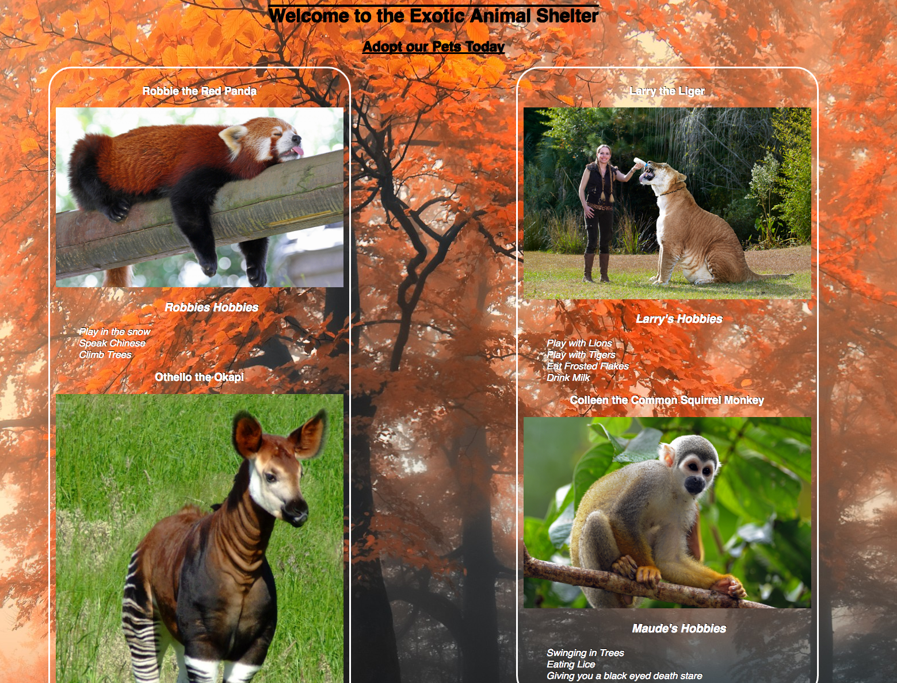
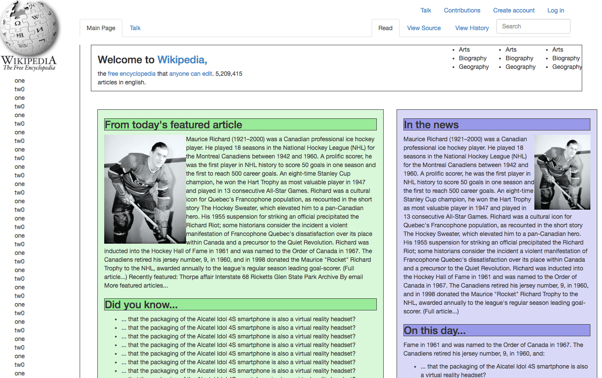

Portfolio
Written only in HTML, CSS and Bootstrap!
- 
The Animal Shelter:
For this webpage we played around with floats and divs and media queries to make a static webpage for a fake animal shelter. When the browser is scaled down below 1600px the background image will change.

Vacation Location:
Using Bootstrap I was able to create a basic layout for a tourism website and even was able to add a video to the page.

Resort Website:
Used CSS and HTML to make a 6 page website about a fictional resort. Which by looking at the different pictures this hotel is obviously an oxymoron.
Interior Design:
Practiced using floats to line up three pictures next to each other, unfortunatley is not optomized for small screens

Blog Page:
Page made immediatley after learning about divs, so I segmented the page and gave each segment its own styling.- 
Incompete Wikipedia Page:
Using Bootstrap and CSS styling I tried to emulate the wikipedia front page. Most of the time was spent on the header bars and links, which I am pretty proud of and I think look pretty nice!